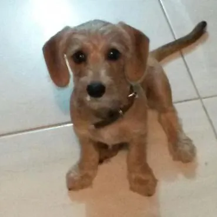

Santuario da Pitty 🐕
A Pitty Nasceu em dezembro de 2014, e chegou pra mim em janeiro de 2015, a principio minha mãe não a queria, mas eu, minha vó e meu irmão insistimos para que ela pudesse ficar.
Mas de onde veio a Pitty?
Claro que foi um presente, e foi de um bom amigo. Mas a origem real dela é o abandono: ela foi jogada em um quintal por um estranho encapuzado. A dona deste quintal, que já possuía outros cães, se recusou a ficar com ela. Então, esse meu amigo, que era vizinho da moça e viu a cena, resolveu tomar a questão para si.
Ele andou pelo bairro acompanhado de mais dois amigos, oferecendo a todos que conhecia o pequeno filhote, e assim o destino me trouxe a coisa mais preciosa da minha vida.
A suposta primeira foto da Pitoresca

Essa é a mais antiga que tenho dela, acredito que foi a mesma foto que enviei para minha mãe, afim de convence-la de ficar com o cão.
Independentemente da minha mãe e irmã terem achado o cãozinho feioso, eu fiz questão de lutar pelo lugar dela na familia.
Parece que nesse momento ela já tinha aprendido o que era uma foto já que pelo resto da vida ela quase sempre olhava para a camera quando estava sendo
fotograda. Fora ser muito fotogênica, por isso a chamava de Pitoresca
Os belos 11 anos de Pitty
A Pitty teve uma boa vida, no começo ainda não era bem aceita dentro de casa, mas quando passou pra
dentro não saiu mais, e tambem não demorou a começar a dormir conosco todos os dias.
Durante sua vida ela viajou para a praia, aparecida do norte, fez muitos passeios e é claro que recebeu muito amor e carinho
de todas as pessoas da familia e de fora.